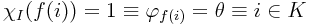

Věta o numeraci
Pro každé j ≥ 1 existuje vyčíslitelná funkce Φ : Nj + 1 → N, která je univerzální pro standardní numeraci j-árních funkcí. Tedy pro každé e ∈ N a (a1, …aj)∈Nj platí

Pro každou aritu tedy existuje funkce Φ, která bere o jeden argument víc -- potřebuje ještě index programu, který má simulovat. Důkaz věty spočívá v definici interpretu -- programu, který bude simulovat jiné programy.
Věta o parametrizaci
Ke každému n ≥ 1, m ≥ 1 existuje totálně vyčíslitelná funkce smn : Nm + 1 → N, taková, že platí
Takže: existuje funkce s, která pro index programu i a m jeho argumentů spočítá index jiného programu, který bude dělat totéž co i, ale bude potřebovat o m argumentů méně. Funkce s vlastně zafixuje prvních m argumentů na nějaké konstanty. m je tady počet fixovaných parametrů, n počet těch, které se nefixují.
Dokazuje se pomocí programu, který celou konstrukci realizuje -- má m konstant a přesypává argumenty tak, aby to sedělo. Prvních n argumentů posune o m pozic doprava a na uvolněná místa dosadí konstanty. Pozor, aby se při posunování nepřepsalo něco, co bude ještě potřeba.
První Riceova věta
Nechť I ⊂ N je netriviální (není prázdná ani se nerovná N) a rekurzivní. Potom existují indexy programů i ∈ I a j ∈ I′1 tak, že ϕi = ϕj.
Tedy pokud je netriviální podmnožina N rekurzivní, potom nerespektuje funkce a naopak pokud nějaká množina respektuje funkce a je netriviální, potom nemůže být rekurzivní.
Důkaz se provede sporem: předpokládejme, že množina respektuje funkce a že množina I obsahuje index nějaké vyčíslitelné funkce2 θ, která není prázdná. I′ potom obsahuje indexy prázdné funkce. Kdyby tomu tak nebylo, tak se prohodí I a I′.
Nechť Pf(i) je program begin x2 := Φ(i, i); x1 := θ(x1) end. Zřejmě program P počítá funkci θ, pokud ϕi(i) je definované a jinak počítá prázdnou funkci.
Tedy pro všechna i ∈ N platí ϕf(i) = θ právě tehdy když i ∈ K.
Pokud tedy f(i)∈I, pak f(i) není index prázdné funkce. Je to index θ. Obráceně pokud f(i) je indexem funkce θ, pak f(i)∈I. Nechť χI je charakteristická funkce I. Pro všechna i ∈ N musí platit 
Protože χI ∘ f je totálně vyčíslitelná, musela by K být rekurzivní, což zřejmě není.
Druhá Riceova věta
Necht I ⊂ N respektuje funkce a nechť existuje funkce θ taková, že všechny její indexy jsou v I a má vyčíslitelné rozšíření θ′ takové, že jeho indexy patří do I′.
I potom není rekurzivně spočetná.
Důkaz půjde zase sporem. Nechť funkce ξ(i, j) se rovná θ′(j), pokud ϕi(i) je definováno a jinak se rovná θ(j). Tato funkce je vyčíslitelná3. Podle věty o parametrizaci existuje totálně vyčíslitelná funkce f : N → N taková, že ξ(i, j)=ϕf(i)(j). f(i) potom patří do I právě tehdy, když ϕi(i) není definováno. Tj. f(i)∈I ≡ i ∈ K′.
Pokud by tedy I byla rekurzivně spočetná, tak i K′ by musela být rekurzivně spočetná. To ale není.
Při použití druhé Riceovy věty je tedy zřejmě potřeba zvolit θ tak, aby nebyla totální. Jinak by totiž neměla potřebné rozšíření.
Třetí Riceova věta
Nechť I ⊂ N respektuje funkce a nechť existuje funkce θ taková, že všechny její indexy patří do I a navíc všechna její konečná zúžení patří do I′.
I potom není rekurzivně spočetná.
Důkaz se opět provede sporem. Nechť funkce μ(i, j) počítá θ(j), pokud Pi nezastaví pro vstup i během nejvýše j kroků. Pokud zastaví během nejvýše j kroků, μ se zacyklí. Funkce μ je zřejmě vyčíslitelná.
Podle věty o parametrizaci existuje totálně vyčíslitelná funkce f tak, že μ(i, j)=ϕf(i)(j).
Dostaneme tedy, že pokud i ∈ K, tak Pi zastaví pro i. Tedy existuje j takové, že Pi zastaví pro i po přesně j krocích. Tj. existuje j takové, že ϕf(i)(x) počítá θ(x) pro všechna x menší než j a jinak je nedefinované. Potom ale ϕf(i) je zúžením θ a její definiční obor je konečný, tedy ϕf(i) ∈ I′.
Z druhé strany platí, že když i ∈ K′, tak Pi nikdy nezastaví a ϕf(i) počítá celou θ a tedy patří do I.
Tedy i ∈ K′≡f(i)∈I a I nemůže být rekurzivně spočetná.
Třetí Riceovu větu tedy zřejmě nejde použít, pokud I obsahuje prázdnou funkci. Ta je totiž konečným zúžením každé funkce.
Časová složitost
f ∈ O(g)
Funkce f roste nejvýše tak rychle jako g.
∃c, n0 : ∀n ≥ n0 : f(n)≤cg(n)
f ∈ o(g)
Funkce f roste pomaleji než g
f ∈ Ω(g)
Funkce f roste alespoň tak rychle jako g